モデル リファレンス構造の可視化
このデモでは、参照モデル間の依存関係を表示する方法を説明します。
目次
デモの要件
このデモの間、Simulink® は現在の作業ディレクトリにファイルを生成します。このディレクトリにファイルを生成したくない場合は、このデモを開始する前に、作業ディレクトリを適切なディレクトリに変更する必要があります。
デモ モデルを開く
デモ モデルを開きます。モデル sldemo_mdlref_depgraph は以下のようになっています。
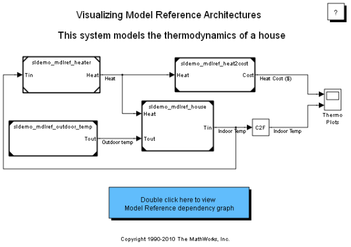参照モデルを検索
find_mdlrefs ユーティリティ関数を使用して、すべての Model ブロックと、モデルによって参照されるすべてのモデルを検索します。この関数の詳細を参照するには、help find_mdlrefs と入力します。
[refMdls, modelBlks] = find_mdlrefs('sldemo_mdlref_depgraph');
find_mdlrefs により、2 つのセル配列 refMdls および modelBlks が返されます。refMdls には、sldemo_mdlref_depgraph によって直接的または間接的に参照されるすべてのモデルの名前が含まれています。refMdls の最後の要素は常に入力モデルの名前です。modelBlks には、最上位モデルとすべての参照モデルのすべての Model ブロックへのブロック パスが含まれています。
モデル リファレンスの依存性グラフを表示
デモ モデル内の青いボックスをダブルクリックして、モデル リファレンスの依存性グラフを表示します。一般に、view_mdlrefs ユーティリティ関数を使用するか、[ツール] メニューから [モデル依存関係]、[モデル依存関係ビューアー]、[ライブラリを含まない .mdl ファイルの依存関係] の順に選択し、特定のモデルの依存性ビューアーを起動します。
依存性グラフ
次の図は、sldemo_mdlref_depgraph の依存性グラフを示しています。
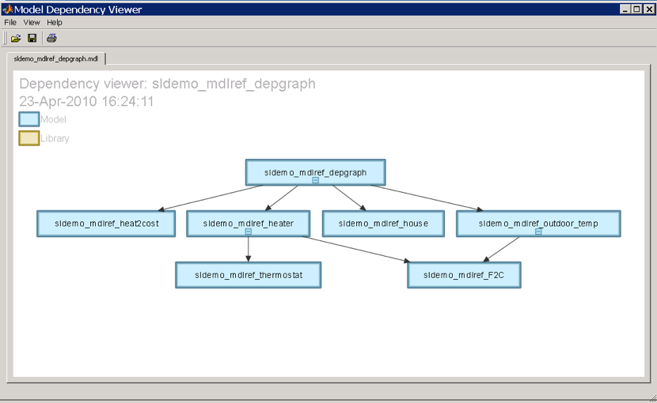
依存性グラフでは、青のノードが Simulink モデルを表しています。方向を持つラインは依存関係を示します。たとえば、このデモ モデルでは、sldemo_mdlref_depgraph から sldemo_mdlref_house へのリンクは sldemo_mdlref_depgraph が sldemo_mdlref_house を参照することを示します。モデルにライブラリ リンクがある場合は、[表示] メニューから [ライブラリを含める] をクリックすることにより、階層内のモデルからリンクするライブラリが依存性ビューアーに表示されるようにすることもできます。[ライブラリを含める] をクリックした場合、ライブラリは黄色のノードを使用して表示されます。
依存性ビューアーの操作
- ノードを左クリックすると、そのノードが選択されます。
- ノードをダブルクリックすると、関連するモデルまたはライブラリが開きます。
- 空白部分でマウスの左ボタンを押してからドラッグすると、複数のノードを選択するための選択ツールが作成されます。
- ノードを右クリックすると、コンテキスト メニューが表示されます。
- 選択されている任意のノードにマウス ポインターを移動し、マウスの左ボタンを押してからドラッグすると、そのノードが移動します。
- マウス ホイールを使用して、現在マウス ポインターの下にある領域を拡大、縮小できます。
- スペース バーを押すと、依存性グラフが中央に配置され、使用可能なスペースにちょうどおさまる倍率に調整されます。
- スペース バーを長押しすると、ナビゲーション モードが起動します。このモードでは、マウスの左ボタンを押してドラッグすることにより、ビューを移動できます。
依存性ビューアーのすべての機能の詳細は、ドキュメンテーションを参照してください。
参照モデル インスタンスを表示
前の依存性グラフでは、ノードが各モデルに 1 つしか存在せず、ノード間のリンクはせいぜい 1 つでした。したがって、この依存性グラフでは、モデル間の参照が複数存在するかどうかわかりません。さらに、このビューでは、どのモデルがノーマル モードで参照され、どのモデルがアクセラレータ モードで参照されるのかもわかりません。
依存性ビューアーでは、参照モデル インスタンスを表示できます。このビューへのアクセス方法は以下の 2 つです。
- モデルの [ツール] メニューから、[モデル依存関係]、[モデル依存関係ビューアー]、[参照モデル インスタンス] の順に選択します。
- モデル依存関係ビューアーの [表示] メニューから、[依存関係のタイプ]、[参照モデル インスタンス] の順に選択します。
インスタンス ビューと呼ばれるこのビューでは、ライブラリは表示されません。
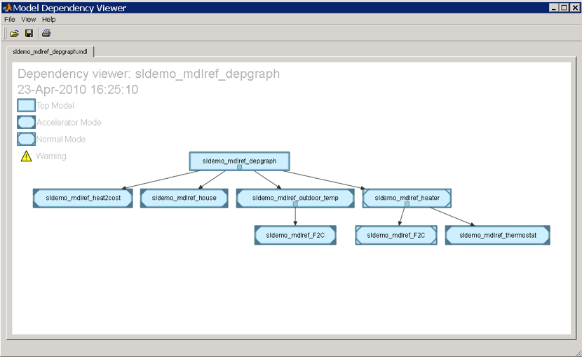
参照モデル インスタンスの依存性グラフ
インスタンス ビューでは、青のノードが Simulink モデルを表します。方向を持つラインは依存関係を示します。メモ:このビューでは、2 つのノードに sldemo_mdlref_F2C というラベルが付いています。それは、このモデルが 2 回、つまりsldemo_mdlref_outdoor_temp と sldemo_mdlref_heater からそれぞれ 1 回参照されているためです。最上位モデルを除くすべてのノードに、参照モデルのシミュレーション モードを表すコーナーがあります。空のコーナーはノーマル モードの参照を表し、塗りつぶされたコーナーはアクセラレータ モードの参照を表します。したがって、sldemo_mdlref_heater はノーマル モードで sldemo_mdlref_F2C を参照し、アクセラレータ モードで sldemo_mdlref_thermostat を参照しています。
インスタンス ビューで依存性ビューアーを操作
sldemo_mdlref_outdoor_temp から sldemo_mdlref_F2C への参照は現在、アクセラレータ モードになっています。sldemo_mdlref_outdoor_temp が参照しているノード sldemo_mdlref_F2C にマウス ポインターを移動すると、sldemo_mdlref_outdoor_temp で sldemo_mdlref_F2C を参照しているブロックへのパスを示すツール ヒントが表示されます。これをノーマル モードでの参照に変更したいとします。
- sldemo_mdlref_outdoor_temp がポイントしているノード sldemo_mdlref_F2C を右クリックします。
- 表示されるコンテキスト メニューから [ブロックの強調表示] をクリックします。これによって sldemo_mdlref_outdoor_temp が開き、対応する Model ブロックが強調表示されます。
- 強調表示されているブロックを右クリックします。
- 表示されるメニューから [ModelReference パラメーター] をクリックします。
- シミュレーション モードをノーマル モードに変更し、[OK] をクリックします。
- この変更を依存性ビューアーで確認するには、依存性ビューアーに移動し、[表示] メニューから [更新] をクリックします。
インスタンス ビューの依存性グラフは、以下のようになります。
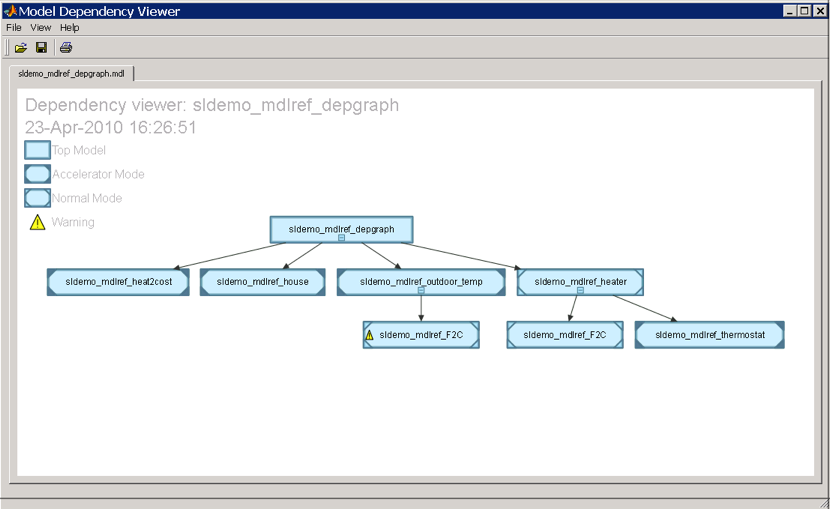
依存性ビューアーに sldemo_mdlref_outdoor_temp から sldemo_mdlref_F2C への参照がノーマル モードでの参照として表示されるようになりましたが、黄色の三角形が付いています。この三角形は警告を表しています。三角形の付いているノードにマウス ポインターを移動すると、警告を説明するツール ヒントが表示されます。この警告が表示されているのは、sldemo_mdlref_F2C がノーマル モードで動作するように設定されているのに、その親 sldemo_mdlref_outdoor_temp はアクセラレータ モードで動作するように設定されているためです。アクセラレータ モードで動作しているモデルからノーマル モードで参照することはできないため、sldemo_mdlref_F2C は、シミュレーション中はアクセラレータ モードで動作します。
このモデルがノーマル モードで動作するようにするには、その上位モデルをすべてノーマル モードで動作するように設定しなければなりません。これを行うには、ノード sldemo_mdlref_outdoor_temp を右クリックし、表示されるコンテキスト メニューから [ブロックの強調表示] をクリックします。sldemo_mdlref_depgraph が開き、対応する Model ブロックが強調表示されています。強調表示されているブロックを右クリックして [ModelReference パラメーター] をクリックし、シミュレーション モードをノーマルに変更してから、[OK] をクリックします。(sldemo_mdlref_F2C にアクセラレータ モードの上位モデルがまだ存在する場合は、それらによる参照もノーマル モードに変更する必要があります。)
この変更を依存性ビューアーで確認するには、依存性ビューアーに移動し、[表示] メニューから [リフレッシュ] をクリックします。
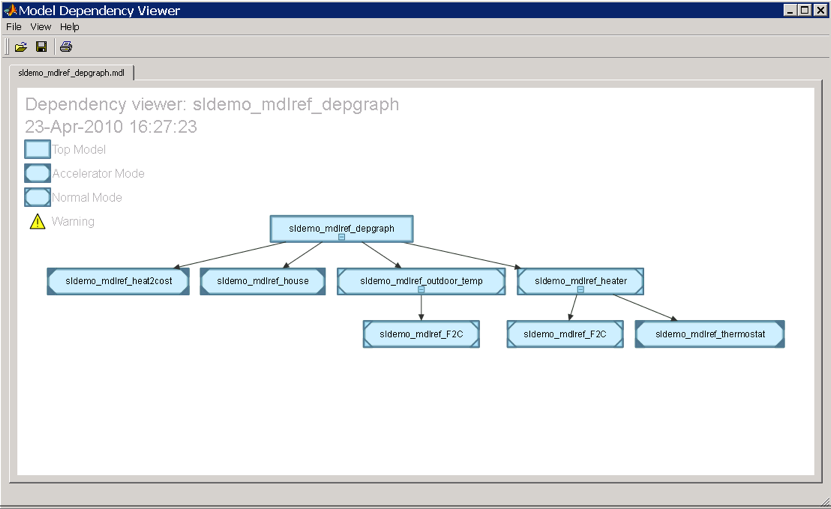
ノーマル モードで複数回参照されるモデルの操作
ノーマル モードで sldemo_mdlref_F2C を参照するモデルは 2 つになりました。このモデルをシミュレーションすると、sl_demo_mdlref_heater は次のようになります。
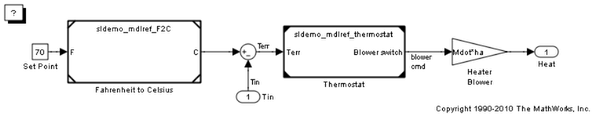そして、sldemo_mdlref_outdoor_temp は次のようになります。
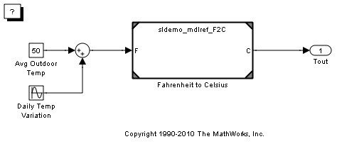sldemo_mdlref_heater 内の sldemo_mdlref_F2C を参照する Model ブロックは白い隅を持ち、sldemo_mdlref_outdoor_temp 内の sldemo_mdlref_F2C を参照する Model ブロックはグレーの隅を持っています。これは、Model ブロックのノーマル モードの可視性が sldemo_mdlref_heater 内の Model ブロックに対してオンになっていても、sldemo_mdlref_outdoor_temp 内の Model ブロックに対してはオンになっていないためです。白い隅を持つのは各モデルの 1 つのみのノーマル モードのインスタンスで、残りはグレーの隅を持ちます。Display ブロック (Scopes など) は、白い隅を持つ Model ブロック (この場合はモデル sldemo_mdlref_heater) から参照されるインスタンスのデータを示しますが、他のインスタンスのデータは示しません。
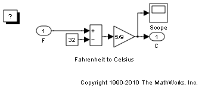 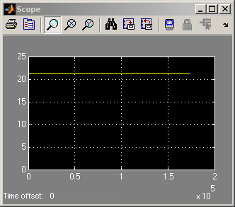[Model ブロックのノーマル モードの可視性] ダイアログ ボックスを開くには、最上位モデル (sldemo_mdlref_depgraph) から、[編集] > [Model ブロック] > [ノーマル モードの可視性] を選択します。ノーマル モードで複数回参照される各モデルのインスタンスのうち、ノーマル モードの可視性をオンにするものを選択します。
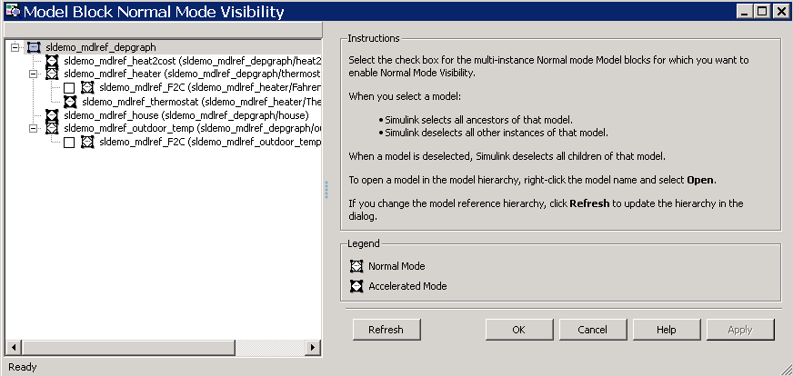
現在、Model ブロックはいずれも選択されていません。つまり、前回のシミュレーション中に、Simulink は sldemo_mdlref_F2C の 1 つのインスタンスを選択してノーマル モードの可視性をオンに設定したことになります。これは、白い隅の Model ブロックによって示されていました。sldemo_mdlref_outdoor_temp によって参照されているインスタンスを選択するには、そのインスタンスに対応するボックスをオンにして、[OK] をクリックします。
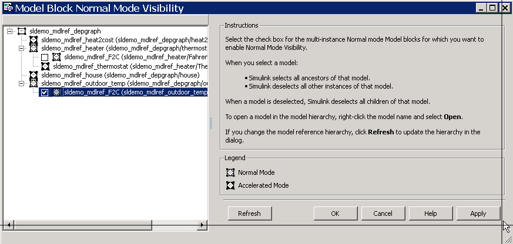
ノーマル モードの可視性の設定を変更した後は、モデル sldemo_mdlref_depgraph をシミュレーションして新しい設定を使用します。
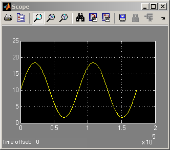